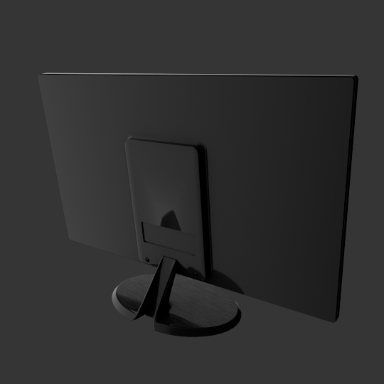

The LG 24M38H computer monitor is a fairly generic black computer monitor. It has a 1920x1080 screen resolution with a typical brightness of 200 cd/m^2. It has a brushed black texture on its plastic frame, and some decals for menu icons on the screen.
Materials
The colours have been calibrated with Macbethcal but the specularity and roughness values are guessed.
The brushed texture was generated digitally and not from a photograph to ensure its uniformity in tiling.
The computer monitor screen glow is taken from an HP LCD monitor measured by
Greg Ward
at LBNL for the New York Times (work sponsored by NYSERDA). It is taken from his
VDT.mat file. The screen is displayed on by default, showing a 1920x1080px
texture which is a typical screenshot where the maximum value on the screenshot
texture is less than 1. The measured screen is at 250 cd/m^2, as such, it is
brighter than what this product actually is, but still within the realm of what
LCD monitors can produce. There are some simplifications in the monitor texture
which is documented in the .mat file.
The transparent plastic materials are defined as a dielectric, which is just guessed, but they are small enough pieces to be simply decorational and not significantly affect any simulation.
Usage
This Radiance model follows the Radiance Filesystem Hierarchy
Standard. As
such, please run make lib to build the Radiance mesh file. Once done, you can
use this in your scene by:
!xform lib/monitor-lg-24m38h/obj/monitor-lg-24m38h.rad
Authors
This model was created by Dion Moult.